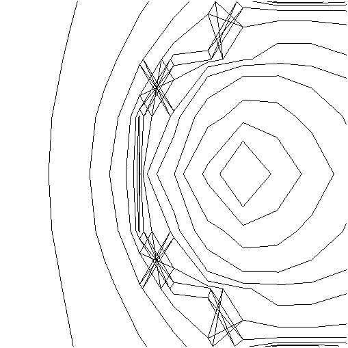
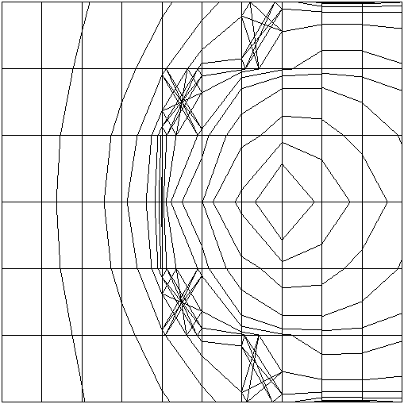
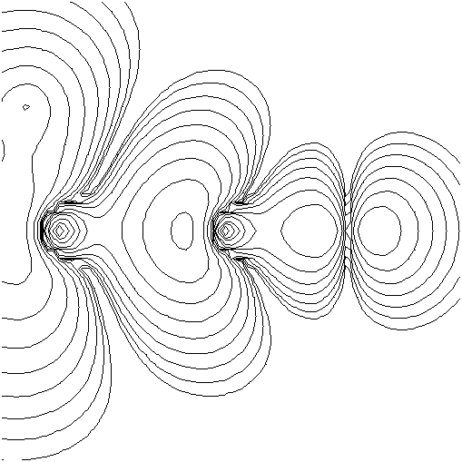
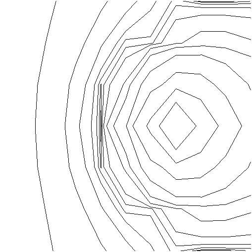
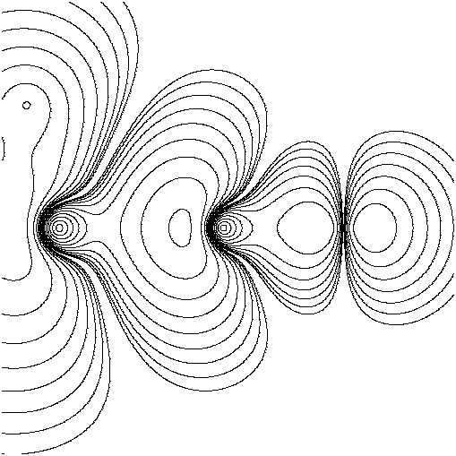
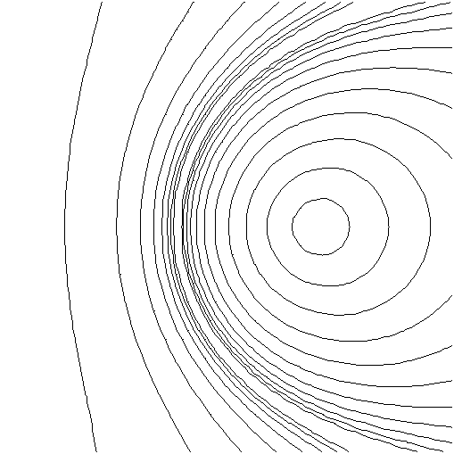
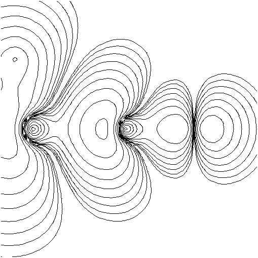
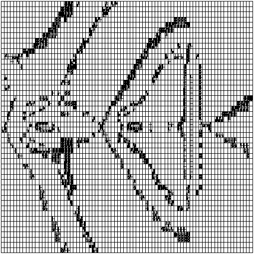

Many efficient contour plotting algorithms tend to do poorly in regions where the slope of the surface is large. This paper describes an algorithm which produces better results in those regions. The algorithm presented is an extension to an algorithm previously developed by the author. Sample plots produced by both the original and the improved algorithms are included for comparison.
A contour plot is a set of level curves of different heights of a function
of two variables. A level curve of height h of a function f(x, y) is the set of
all points (x, y) such that
There are a number of methods of having a computer draw contour plots, but almost all of them work by numerically approximating the coordinates of a finite number of points on a level curve and plotting a curve that fits these points. The principal differences between the methods are in how the points are approximated and how the curve to fit them is generated. Another difference is whether the function to be contoured is presented as a procedure that computes the function at arbitrary points or as a table of values of the function at a fixed set of points.
An examination of the computer science literature and of user documentation for computer graphics software shows that almost all of the methods of contour plotting are variations of two basic algorithms. In this paper, the two algorithms will be referred to as the level curve tracing algorithm and the recursive subdivision algorithm.
The algorithm takes as input a two-dimensional array of function values, a one-dimensional array of level curve heights, together with parameters that specify the size of each array and the range of X and Y coordinates. Each element of the two-dimensional array contains the numerical value of the function evaluated at the coordinates of the grid vertex specified by the array subscripts of that element.
For each element of the level curve height array, the following is done. All edges in the grid that are considered to be intersected by the current level curve are marked. This marking is represented by two two-dimensional arrays of Boolean variables, one array each for the horizontal and the vertical edges. An edge is considered to be intersected if the function evaluated at one endpoint is less than the height of the level curve and the function evaluated at the other endpoint is greater than the height of the level curve. Each vertex that precisely lies on the current level curve is also marked in another two-dimensional Boolean array. Next each of these three Boolean arrays is scanned until an element which is set is found. Adjacent edges and vertices to this marked edge or vertex are checked to determine which ones are also marked. If there are any adjacent marked edges or vertices, then the coordinates of all but one of them are pushed onto a stack, while a line segment is plotted between the current edge or vertex and the adjacent one that was not pushed onto the stack. For the purpose of plotting the line segment, the point of intersection between an edge and a level curve is approximated by reverse linear interpolation. The edge or vertex not pushed onto the stack then becomes the current one. This procedure of checking adjacent edges and vertices is repeated, unmarking the edges and vertices that become current, until no adjacent edges or vertices are found. When that happens and there are still elements on the stack, then the stack is popped, the edge or vertex popped off becomes the current one, and the adjacent-checking procedure is resumed. If the stack is empty, then the scanning of the Boolean arrays is resumed, and the adjacent checking procedure is entered when another marked edge or vertex is found. Plotting of the level curve of a particular height is completed when all three arrays have been completely scanned.
The algorithm presented in [Cottafava & Le Moli 1969] is almost identical to the one presented in [Aramini 1980], with the exception that instead of having to deal with vertices that are precisely on a level curve as a special case, they are treated as if the value of the function evaluated at those vertices was infinitesimally smaller or larger. Thus level curves that in reality go precisely through a vertex will be treated as if they intersect some of the edges that terminate on that vertex. But since reverse linear interpolation will determine the point of the intersection to be at the vertex, the results appear the same in most cases. The advantage of this variation is that storage is not needed for marking vertices; further, the algorithm is simpler as it only has to deal with level curves intersecting edges instead of also having to deal with the intersections with vertices.
In [Wright 1975], the marking of edges is not done. Instead of scanning Boolean arrays to determine which edges are marked, the scanning is done of the function value array. The edge intersection determination is done by numerically comparing adjacent elements of the function value array with the height being contoured. In order to prevent retracing of the same level curve, the coordinates of each grid cell through which the level curve has been plotted so far are stored in an array. When scanning to find an edge that is intersected by the level curve in order to begin plotting it, the contents of the array containing the coordinates of already plotted cells can be searched to determine whether or not the portion of the level curve that intersects the edge in question has already been plotted. Since in general only a small fraction of the total number of cells in the region being considered will contain a portion of a given level curve, this variation has the advantage of usually needing less storage than the variations that mark edges using Boolean arrays.
In [Karney 1977] and [Yates 1978], grid cells are triangles instead of being rectangles. In [Yates 1978] this is done by having diagonal edges in addition to having horizontal and vertical ones. The diagonal edges used are the ones that connect the top left corner to the bottom right corner of what would otherwise be a grid rectangle, but this choice is arbitrary and using the other diagonal edges would work equally well. The plotting is done by systematically examining each triangular grid cell. Intersection points, if any, between each edge of the cell and a given level curve are computed using reverse linear interpolation. Line segments are plotted between intersection points of a level curve with each of two edges belonging to the cell. Note that if any edges belonging to a triangular cell are intersected by a given level curve then exactly two edges are intersected. This property avoids a problem associated with rectangular grid cells, namely the problem of how to determine which intersection points to connect to which other intersection points in those cells where all four edges are intersected. The two most likely possibilities are to connect the left intersection point to the top intersection point and connect the right with the bottom, or to connect the left to the bottom and the right with the top. Using the diagonal edges evades this problem, but does not cure it. As it turns out, in those cases in which all four edges of a rectangular cell would be intersected by a level curve, using triangular grid cells would cause line segments to be plotted such that the diagonal edge is not crossed. Statistically this choice of connecting will be correct only half of the time since the other possible choice of connecting is equally probable of being correct.
The triangular grid used in [Karney 1977] is different than in [Yates 1978]. In [Karney 1977] there is an additional vertex in the center of each cell of the rectangular grid. The function value used for this central vertex is the mean of the function values for the four adjacent corner vertices. Thus each rectangle of the original rectangular grid is replaced by four triangles. This variation will allow either matching of intersection points of the original rectangular grid to occur depending on the function values at the vertices and the height of the level curve, so that it is more likely to make the correct choice than the variation given in [Yates 1978]. However, having so many diagonal edges tends to cause the level curve plotted to wiggle more than in the other variations. Also it is possible for plotted level curves of two different heights to cross, while it is not possible for actual level curves to cross.
Note that a set of discrete points on the level curve is obtained by this algorithm rather than a connected set of line segments. If a raster plotting device is being used and the minimal cell size used matches the resolution of the plotting device, then this is desirable. If on the other hand line segments are needed, to plot on a pen plotter, for instance, as in the case of [GRZ], then a list of points can be maintained until all of the points are generated. This list can then be examined to determine adjacencies of these points in order to generate line segments connecting adjacent points.
Both of the algorithms described in the last section perform well for contour plotting of functions whose derivatives are sufficiently small. However these algorithms give poor results when applied to functions with rapidly changing surface features.
Another is associated with edges being intersected more than once by the same level curve. Since only the function values at the endpoints of an edge are examined to determine if there is an intersection, the existence of an even number of intersections between a level curve and an edge will cause the algorithm to act as if there were no intersections. The algorithm will treat the existence of an odd number of intersections, as exactly one intersection. A somewhat related deficiency is that the actual point of intersection between a level curve and an edge can be relatively far away from the intersection point predicted by reverse linear interpolation.
One more deficiency becomes a problem if the radius of curvature of the level curve is not large with respect to the cell size. This causes the plotted level curve to have noticeable corners at the points where the line segments comprising it meet, even though the actual level curve is smooth.
The other deficiencies relate to implementation. If the function can be computed at arbitrary points by a procedure then the procedure can get invoked twice for the same point. If computing the function is computationally expensive then this is undesirable. If line segments rather than discrete points are needed, then storing the coordinates of the points and the subsequent joining up of these points with line segments can be cumbersome considering the large number of points typically involved.
There are two basic algorithms for doing contour plotting. However each of these basic algorithms has certain deficiencies that cause poor results for several classes of surface features which a function may exhibit. The remainder of this paper will discuss several proposed improved algorithms which partially cure these deficiencies, including some discussion of the implementation of some of them.
There are many ways of trying to devise an improved contour plotting algorithm. Due to the limited time available to explore these approaches, however, only extensions of existing algorithms were explored in depth in the research leading to this paper. Some ideas for more novel approaches are presented in the concluding chapter of this paper.
The general approach taken was to deal with some of the deficiencies of the level curve tracing algorithm. In order to simplify dealing with these deficiencies, it will be assumed in this paper that the function whose contour plot is to be constructed is available in the form of a procedure that can be evaluated at arbitrary coordinates. This assumption is not unreasonable, since if values of the function were instead only available for a fixed set of points, then a procedure could approximate the value of the function at any arbitrary point by interpolation.
Figure 1 - Contour plot of orbital 7a1 of BH3CO plotted by the level curve
tracing algorithm as given in [Aramini 1980] (80 x 48 cells)
As a sample function that exhibits the deficiencies of the level curve tracing algorithm, the electron density function for the 7a1 molecular orbital of the chemical compound borine carbonyl (BH3CO) was used. For more detailed information regarding this function see [Ermler, et. al. 1976]. Figure 1 is a contour plot of orbital 7a1 of BH3CO plotted by the level curve tracing algorithm as given in [Aramini 1980], using an 80 by 48 cell grid. Some of the deficiencies of this contour plotting algorithm become quite visible in this plot. There are several cases of degenerate cells, a degenerate cell being one that has all four of its edges intersected by the same level curve. These show up in Figure 1 as quadrilaterals, with additional line segments connecting diagonally opposite vertices of each quadrilateral. This plot also has also three steep valleys that cause a number of the cells they pass through to have one or more edges that are each intersected twice by the same level curve. This exhibits that edges which are intersected an even number of times by a given level curve are treated as if they were not intersected by that level curve. A third difficulty demonstrated by Figure 1 is that level curves with a small radius of curvature have noticeable corners at the points where the line segments approximating them meet. This is most exemplified in Figure 1 by the level curves surrounding the two largest peaks.

Figure 2 - Enlargement of a region 10 cells wide by 6 cells high of Figure
1 near the leftmost large peak

Figure 3 - Enlargement of a region 10 cells wide by 6 cells high of Figure
1 near the leftmost large peak with a grid superimposed upon it
The simplest problem to characterize of the level curve tracing algorithm is to accurately plot degenerate cells. The algorithm presented in [Aramini 1980] will typically draw all six possible line segments that connect each of the four points taken two at a time. Clearly this behavior is undesirable, since only two of the six line segments can be correct. The others are not only incorrect, but clutter up the resulting plot making it difficult for someone viewing the plot to interpret the behavior of the function in those regions where degenerate cells occur. Figure 2 is an enlargement of a region 10 cells wide by 6 cells high of Figure 1 near the leftmost large peak. Figure 3 is the same enlargement as in Figure 2, but with a grid superimposed upon it. These two plots demonstrate more clearly the behavior of this algorithm in degenerate cells. Note that in these Figures there are several cells that are degenerate for more than one level curve causing different level curves to appear as crossing in those cells. Of course, exact level curves of a function can never cross as this would imply that the function had two different values at the point of intersection, so these apparent crossings are clearly erroneous.
A reasonable choice for the form of this simpler function is
where a, b, c, and d are chosen such that the values of f '(x, y) precisely match those of the given function at the corners of the cell. One fortunate property of f '(x, y) is that for the boundaries of a cell it is equivalent to linear interpolation, thus level curves generated for each cell will properly connect at the boundaries between the cells. The analytically determined level curves for f '(x, y) will be a pair of hyperbolas. Each hyperbola could be plotted as a sequence of line segments that approximate it. Alternatively, rather than being plotted, these hyperbolas could serve as a computational model in order to determine how the intersection points are connected to each other in degenerate cells. The appropriate line segments could then be drawn to properly connect the intersection points.
An algorithm designed by the author, based on this idea works as follows. Rather than tracing along each level curve as the original algorithm does, this algorithm will systematically process each cell exactly once. Doing this makes the algorithm somewhat simpler since a given cell is never entered more than once. Doing this also has the advantage that the function values for the entire grid need not be stored. If the scanning of cells is done across each row, then only two rows of function values at vertices need be stored, the row above and the row below the current row of cells. When moving up to the next row of cells, the values in the array for the top row of vertices are copied into the array for the bottom row of vertices, and the function is evaluated at each vertex in the new top row of vertices and these values are put in the array for the top row of vertices. A slightly more complicated algorithm could be devised such that only one row, plus one extra element need be stored. The only foreseeable disadvantage of doing one cell at a time rather than one level curve at a time is that if a pen plotter is used as an output device the pen will draw isolated line segments rather than a connected sequence of them, requiring the pen to move more. This would increase the plotting time and could possibly reduce the quality of the plot due to mechanical error.
For a given cell, the following is done for each level curve. It is determined which edges, if any, are intersected by the level curve. An edge will be considered intersected by a level curve if the value of the function at one of its endpoints is less than or equal to the height of the level curve and the value of the function at the other endpoint is greater than the height of its level curve (using less than for one endpoint and greater than or equal to for the other one would work equally well). Either test of intersection guarantees that exactly zero, two, or four edges of a cell would be considered intersected by a given level curve. If no edges are intersected, then nothing further is done in that cell for that particular level curve. If exactly two edges are intersected, a line segment is drawn that connects the two points of intersection.
The remaining case, when all four edges are intersected, is more complicated to handle. The value of the function at some interior point between the intersection points could be used to distinguish between the three cases of a saddle point in the cell or a ridge running through the cell or a valley running through the cell. A reasonable point to use for this is the point of intersection between the line segment connecting the top edge and the bottom edge intersection points with the line segment connecting the left edge and the right edge intersection points. If the value of the function at that point is less than, equal to, or greater than the height of the level curve, this indicates, respectively, a valley, a saddle point, or a ridge. If the cell contains a saddle point, then two line segments are drawn, one connecting the top edge and the bottom edge intersection points, and the other connecting the left edge and the right edge intersection points. If a ridge or a valley runs through the cell, then the algorithm must determine which way it is oriented. One way of doing this is to make use of the value of the function at one of the corners of the cell. In the author's implementation, the top right corner was arbitrarily chosen for this purpose. If the value of the function at the interior point and the top right corner are both greater than or both less than the height of the level curve, then the ridge or valley is oriented from the lower left to the upper right. Thus, a line segment is drawn connecting the left edge and the top edge intersection points. Another line segment is drawn connecting the bottom edge and the right edge intersection points. If, on the other hand, the height of the level curve is numerically between the function value at the top right corner and the interior intersection point, then the ridge or the valley is oriented from the lower right to the upper left. Thus, a line segment is drawn connecting the left edge and the bottom edge intersection points. Another line segment is drawn connecting the top edge and the left edge intersection points.

Figure 4 - Contour plot of orbital 7a1 of BH3CO plotted by the improved
algorithm as given in Section 2.1.2 (80 x 48 cells)

Figure 5 - Enlargement of a region 10 cells wide by 6 cells high of Figure
4 near the leftmost large peak (same region as in Figure 2)
In Appendix A is the essential part of a program written in FORTRAN which implements this algorithm. Figure 4 is a contour plot of orbital 7a1 of BH3CO plotted by this improved algorithm. The heights of the level curves and the fineness of the grid are identical to those used in Figure 1. Figure 5 is an enlargement of a region 10 cells wide by 6 cells high of Figure 4 near the leftmost large peak. This is the same region that was used in Figure 2. While many of the other problems are still present in these plots, the erroneous quadrilaterals have gone away. Also there are no longer any apparent crossings of the level curves.

Figure 6 - Contour plot of orbital 7a1 of BH3CO plotted by the improved
algorithm as given in Section 2.1.2 (640 x 384 cells)
In order to determine how fine a grid is needed to acceptably plot the electron density function used in the previous illustrations, a sequence of contour plots were made using the improved algorithm of Section 2.1.2. The initial plot of this sequence was Figure 4. Each successive plot was constructed by the improved algorithm using a grid with twice the number of rows and twice the number of columns as the previous plot in the sequence. This sequence was continued until a plot was produced that no longer exhibited any of the known deficiencies of the algorithm, which occurred when the grid used had 8 times as many rows and 8 times as many columns as the grid used to produce Figure 4. This latest plot of the sequence is shown in Figure 6, and uses a 640 by 384 cell grid. Since there are 64 times as many cells and approximately 64 times as many function evaluations needed to produce this plot compared to producing the plot in Figure 4, it is expected that the execution time needed would be 64 times as great. When these two plots were produced by executing a program implementing the algorithm of Section 2.1.2 on a Prime 650 computer, the run-time required to produce Figure 4, while not precisely measured, seemed to be under one minute, while approximately one half hour of run-time was needed to produce Figure 6. Thus, empirically, this ratio of 64 seems correct to within an order of magnitude.

Figure 7 - Enlargement of a region 80 cells wide by 48 cells high of
Figure 6 near the leftmost large peak (same region as in Figure 5)
Figure 7 is an enlargement of a region 80 cells wide by 48 cells high of Figure 6 near the leftmost large peak. This enlargement more clearly shows that all of the known deficiencies were eliminated by using such a fine grid. Note that Figure 7 depicts the same region as does Figure 5.
The simplest way of implementing this is to have a recursively defined data structure that allows a description of a grid giving its dimensions and a description of a sub-grid for each cell which is to be subdivided and a procedure which is applied to this recursive data structure. The procedure processes each cell of a grid one at a time. For cells which are not to be subdivided, the procedure plots line segments in the same way as the algorithm in Section 2.1.2. For cells which are to be subdivided, the procedure is recursively applied to the sub-grid. The author has implemented such a procedure, and two difficulties with it have been detected. One difficulty is that it is very tedious for the user to specify the data needed for building the necessary instantiation of the recursive data structure. The other difficulty is that the line segments approximating a level curve did not connect across the boundary between two cells that where not subdivided the same way. This latter problem is due to the fact that in order to determine the points of intersection with a level curve and the boundary, reverse linear interpolation was done using different data points on opposite sides of the boundary.
In this paper, a contour plotting algorithm that automatically adjusts grid fineness in response to the behavior of the function being contoured will be referred to as an adaptive contour plotting algorithm. For an algorithm to be adaptive, it must have some criterion for determining what grid fineness to use. In the research leading to this paper, many possible criteria for this were investigated.
What would seem to be a more appropriate measure to use is the divergence of the gradient of the function, otherwise known as the Laplacian. Since the Laplacian is a scalar, in this case the absolute value could be compared against a constant. The Laplacian can be approximated discretely at the point (x, y) using the following formula:
| + |
where Δx and Δy are, respectively, the x and y dimensions of a grid cell. Thus, the Laplacian is inexpensive to compute at a grid point, since it only uses values of the function at grid points, which must be evaluated anyway.
The Laplacian criterion has some difficulties. It will not detect saddle points too well, since at saddle points the x directional and y directional contributions to the Laplacian are of opposite sign. Also determining what value to use for the constant of comparison is rather difficult. What might be a reasonable value to use for one part of the plot might not be reasonable in another part of the plot. If the constant is too large, then some troublesome areas of the plot will not be detected. If the constant is too small, then much more of the plot will be done at a finer grid size than is necessary.
Two other indicators of troublesome areas use the value of the function at the center of the cell. One possible test is that if the central function value is less than the minimum of or greater than the maximum of the vertex function values, then the cell is considered troublesome. The other test is a variation of this, namely if the central function value is less that the second smallest of, or greater than the second largest of the vertex function values, then the cell would be considered troublesome.
Several other criteria investigated are not based solely on the properties of the function, but also involve the particular level curves to be plotted. One such test was applied for each cell of the grid to each level curve that goes through that cell. The line segment that approximates a particular level curve in a cell is computed as in the improved algorithm of Section 2.1.2. The function is then evaluated at the midpoint of this line segment. The difference between the computed value of the function at that point and the height of the level curve is a raw measure of how well the line segment approximates the level curve. A normalized, and perhaps more meaningful, measure to use is the ratio of this difference to the difference between the maximum and the minimum of the values of the function at the vertices of the cell. If the absolute value of this ratio is greater than some constant, then that cell will be considered troublesome. Unfortunately, determining what constant to use is non-trivial, as for other criteria that involve some empirically determined constant.
Another such test was applied for each edge of the grid on each level curve that intersects that edge. The intersection point between that edge and the particular level curve is obtained by reverse interpolation. The function is then evaluated at the intersection point. The difference between the computed value of the function at the approximated intersection point and the height of the level curve gives a raw measure of how well linear interpolation fits the function at that edge. A normalized measure would be the ratio of this raw measure with the difference between the function values at the endpoints of the edge. If the absolute value of this ratio for any level curve crossing a given edge is greater than some constant, then the two cells adjacent to that edge would be considered troublesome. A similar test [Watanabe 1981] is to first determine the intersection point by interpolation, and then evaluate at that point, as above. Next, a second order approximation of the level curve is made by reverse interpolation between the first order point and the appropriate endpoint. The distance between the first and second order points is used as a measure of goodness of fit of linear interpolation. Another, normalized, measure is the ratio of this distance to the length of the edge. Comparing either of these measures against a constant serves as a useful criterion of troublesomeness. Using simply the distance measure gives an idea of the amount of mismatch between the line segments comprising the same level curve on opposite side of the particular edge in the event that the size of cells on opposite side of the edge were different. The normalized measure is better for determining how well linear interpolation fits the function on a relative scale. This particular normalized measure is nicer to deal with than the previous normalized measure because its value is between zero and one, while the previous one could be unboundedly large.
There were six such programs written. Table 1 summarizes the results of these programs when applied to the electron density plot of orbital 7a1. This table gives the number of function evaluations performed and the number of line segments drawn for each program, and, where applicable, for each of several values of the constant used in the second order interpolation test. There was one program which was based on the central function value criterion, and another on the normalized second order interpolation test. The first one performed well in the vertical valley near the right side of the plot, but the other two curved valleys gave rather messy results due to the sudden transitions between cell sizes, causing level curves not to connect up too well. The other program, on the other hand, performed well everywhere except in the vertical valley. Since each of these tests handles different troublesome situations, a combination of the two tests was tried, that is if either test failed, then the cell would be subdivided. This seemed to work, but drove the number of function evaluations, and thus the run time, way up. Next, the central function value test was instead combined with the unnormalized second order interpolation test, but this produced identical results to the previous combined test. Then for the sake of completeness, the unnormalized test was tried by itself.
| test used | const. | funct. evals. | line segs. | comments |
| normalized 2nd order interpolation |
1.00 | 8,871 | 2,440 | line mismatch |
| 0.10 | 13,107 | 3,622 | bad vert. valley | |
| 0.05 | 13,506 | 3,701 | bad vert. valley | |
| central value | -- | 25,345 | 3,276 | curve mismatch |
| both norm. int. central value |
0.10 | 36,715 | 4,187 | good |
| 0.05 | 37,221 | 4,620 | good | |
| both unnorm. int. & central |
-- | 37,221 | 4,260 | good |
| unnorm. int. | -- | 13,506 | 3,701 | bad vert. valley |
On the second pass adjacencies of cells can be easily determined using the tree and the array elements specifying cell lengths. If, when processing a given cell on the second pass, it has neighboring cells which are smaller, the algorithm will use intersection points as produced by the neighboring cells which are smaller for those edges between the current cell and the smaller cell, rather than using intersection points as generated by the current cell alone. It will be considered that in the smaller cells the intersection points will be known more accurately, and if the larger cells use the smaller cells' intersection points, then the level curves will be drawn continuously.

Figure 8 - Contour plot of orbital 7a1 as plotted line segment matching
improved algorithm by this program

Figure 9 - Plot showing the arbitrarily nested grid that was used
internally to the program when generating Figure 8
Appendix B contains a program written in C which implements this algorithm. Figure 8 is a contour plot of orbital 7a1 as plotted by this program. Figure 9 is a plot showing the arbitrarily nested grid that was used internally to the program when generating Figure 8. Note that in this program, an efficient sparse array was not used in order to simplify this experimental version, but advantage was taken of the rather large virtual memory available on the PR1ME 650 on which this program was developed. From statistics taken, only approximately eight per-cent of the array is actually ever used for this particular function, so more efficient sparse array techniques are worthwhile to use in this case. This particular program gives better results than the algorithm of Section 2.1.2, but still leaves some things to be desired. The run-time to produce Figure 8 was approximately four minutes, making this much better than the 30 minute run-time for producing the high resolution, traditional algorithm contour plot.
There are many software packages available for constructing a contour plot of a function. These packages produce good results when the surface represented by a function is reasonably smooth. For functions which have sharp surface features, however, the software packages, and the algorithms they are based on have deficiencies which cause rather poor results in the areas of the plot near these surface features.
There are two major approaches that can be taken in order to try to devise a contour plotting algorithm that works well even in regions which contain sharp surface features. One approach is to devise a fundamentally different algorithm that avoids the pitfalls of the traditional algorithms. The other approach is to enhance one of the traditional algorithms. This enhancement could be in the form of a means of detecting situations in which the traditional algorithm is known to behave poorly and to handle these situations as special cases. The former approach might, in the long run, yield a better solution, but the more conservative latter approach was taken, due to the limited amount of time available for the research leading to this paper.
Following the enhancement approach, several improvements have been made to the level curve tracing algorithm. The first, and simplest, of these improvements has been to reasonably solve the problem of degenerate cells. Other improvements were based on detecting in which grid cells the function is very non-monotonic, and then subdividing those cells recursively. Due to this recursive subdivision, cells of many different sizes could be used in the same contour plot. This created the difficulty that level curves would appear discontinuous when crossing the boundary between cells of different sizes. A further improvement was to store information about all of the cells before any plotting is actually done, and then to construct the level curves in a way that would be consistent in neighboring cells of different size. This insures that the level curves are drawn continuously. Unfortunately, the most recent implementation of this algorithm is very space inefficient, so it will be usable only on a computer with a large per job address space only if a space efficient sparse array store scheme is used.
More work could still be done with the enhancement approach. For example, better tests to determine what regions are troublesome could be devised. Also, perhaps a scheme for matching up level curves across cell boundaries might be obtained that does not require the large array of cell information, which, even if stored efficiently, uses a large amount of memory.
The approach of devising a fundamentally new contour plotting algorithm, however, seems to hold more promise of completely avoiding the deficiencies of the level curve tracing algorithm and the recursive subdivision algorithm. One idea for such an algorithm avoids the usage of a grid altogether, and thus also avoids the difficulties associated with using a grid. For each level curve, or branch thereof, the algorithm starts with the current point being a starting point on the particular curve. The function could be evaluated at several points in a circular arc around the current point in order to determine the direction in which the level curve is heading. Then a line segment is drawn in that direction from the current point to a point this circular arc, and the current point becomes the other endpoint of this line segment. From this new point the process of scanning around to find the next line segment is repeated. This process of of tracing out the level curve continues until the algorithm comes back to the starting point or until the edge of the region being plotted is reached. The radius of the circular arc, and other things concerning how the next point is scanned for could be modified dynamically based on the behavior of the level curve so far and also from the values of the function obtained while scanning. Of course, this is just a rather general idea, but developing a specific algorithm seems to deserve further investigation.
The following is a program written in FORTRAN by the author that implements the improved contour plotting algorithm given in Section 2.1.2.
C * CONTOUR PLOTTING SUBROUTINE WRITTEN BY MICHAEL J. ARAMINI
C * THIS VERSION USES INTERIOR POINT TO DECIDE 4 EDGE CELLS
C * THIS VERSION WILL CONDITIONALLY PRINT A GRID
SUBROUTINE CNTR(NUMX,NUMY,XMIN,XMAX,YMIN,YMAX,VAL,
# NVALS,NCHARS,TITLE,GRIDP)
LOGICAL GRIDP
DIMENSION VAL(NVALS),TITLE(1)
COMMON /CTRCOM/XLOW,YLOW,DELX,DELY,V,FOLD(256),FNEW(256)
LOGICAL DEBUG
C * INITIALIZE PLOTTER, SET UP WINDOW, ETC.
CALL INIT
CALL DEVON
CALL BOUNDS(DEF(1),DEF(2),DEF(3),DEF(4))
CALL WBOUND(X1,X2,Y1,Y2)
C * FIGURE OUT IF X OR Y LIMITS THE WINDOW (ALLOW LOWER BORDER OF
C * 1/8 OF PLOT HEIGHT FOR TITLE)
BSLOPE=(Y2-Y1)/(X2-X1)
IF (1.125*(YMAX-YMIN)/(XMAX-XMIN).LT.BSLOPE) GOTO 999
C * Y IS LIMITING DIMENSION
YYMAX=YMAX
XXMAX=1.125*(YMAX-YMIN)/BSLOPE+XMIN
GOTO 990
C * X IS LIMITING DIMENSION
999 XXMAX=XMAX
YYMAX=(XMAX-XMIN)*BSLOPE+YMIN-0.125*(YMAX-YMIN)
990 CALL SETLIM(XMIN,XXMAX,YMIN-0.125*(YMAX-YMIN),YYMAX,
$ .FALSE.)
C * PLOT TITLE
IF (NCHARS.LE.0) GOTO 34
CHARS=NCHARS
HEIGHT=(XMAX-XMIN)/CHARS
X0=0.0
IF (HEIGHT.LE.0.0625*(YMAX-YMIN)) GOTO 37
HEIGHT=0.0625*(YMAX-YMIN)
X0=0.5*(XMAX-XMIN-HEIGHT*CHARS)+XMIN
37 CALL STRING(X0,1.0625*YMIN-0.0625*YMAX-0.5*HEIGHT,
$ 100.0*HEIGHT/(YYMAX-YMIN+0.125*(YMAX-YMIN)),0.0,
$ TITLE,0.0)
C * SET UP SOME GLOBAL VARIABLES
34 XLOW=XMIN
YLOW=YMIN
DELX=(XMAX-XMIN)/(NUMX-1)
DELY=(YMAX-YMIN)/(NUMY-1)
C * CONDITIONALLY DRAW GRID
IF (.NOT.GRIDP) GOTO 52
DO 50 I=1,NUMX
50 CALL DRAW(XX(I),YY(1),XX(I),YY(NUMY))
DO 51 J=1,NUMY
51 CALL DRAW(XX(1),YY(J),XX(NUMX),YY(J))
52 CONTINUE
C * SET UP OLD VALUES
DO 21 I=1,NUMX
21 FOLD(I)=FUNCT(XX(I),YY(1))
C * LOOP FOR Y DIRECTION
DO 22 J=2,NUMY
FNEW(1)=FUNCT(XX(1),YY(J))
C * LOOP FOR X DIRECTION
DO 24 I=2,NUMX
FNEW(I)=FUNCT(XX(I),YY(J))
C * LOOP FOR CONTOUR VALUES TO BE PLOTTED
DO 23 K=1,NVALS
C * EXTRACT THE CURRENT VALUE
V=VAL(K)
C * COMPUTE THE MAGIC NUMBER (INDICATING THE KIND OF CELL)
L=0
IF (FOLD(I).GE.V) L=L+1
IF (FOLD(I-1).GE.V) L=L+2
IF (FNEW(I).GE.V) L=L+4
IF (FNEW(I-1).GE.V) L=L+8
C * PSEUDO-CASE STATEMENT TO DO APPROPRIATE ACTION FOR CELL
GOTO (23,1,2,3,4,5,6,7,8,9,10,11,12,13,14,23),L+1
7 CONTINUE
8 CALL DRAW(XX(I-1),ALEFT(I,J),TOP(I),YY(J))
GOTO 23
5 CONTINUE
10 CALL DRAW(BOT(I),YY(J-1),TOP(I),YY(J))
GOTO 23
2 CONTINUE
13 CALL DRAW(XX(I-1),ALEFT(I,J),BOT(I),YY(J-1))
GOTO 23
4 CONTINUE
11 CALL DRAW(TOP(I),YY(J),XX(I),RIGHT(I,J))
GOTO 23
3 CONTINUE
12 CALL DRAW(XX(I-1),ALEFT(I,J),XX(I),RIGHT(I,J))
GOTO 23
1 CONTINUE
14 CALL DRAW(BOT(I),YY(J-1),XX(I),RIGHT(I,J))
GOTO 23
C * HANDLE 4 EDGE CELLS
6 CONTINUE
9 X0=AINTER(FOLD(I-1),FOLD(I))
X1=AINTER(FNEW(I-1),FNEW(I))
Y0=AINTER(FOLD(I-1),FNEW(I-1))
Y1=AINTER(FOLD(I),FNEW(I))
C * COMPUTE COORDINATES FOR INTERSECTION POINT
Y=(X0*(Y1-Y0)+Y0)/(1.0-(X1-X0)*(Y1-Y0))
X=Y*(X1-X0)+X0
C * COMPUTE FUNCTION VALUE FOR INTERSECTION POINT
F=FUNCT(XX(I-1)+DELX*X,YY(J-1)+DELY*Y)
C * FIGURE OUT WHAT ACTION TO TAKE
IF (F.EQ.V) GOTO 31
IF (((F.GT.V).AND.(FNEW(I).GE.V)).OR.
$ ((F.LT.V).AND.(FNEW(I).LT.V))) GOTO 32
30 CALL DRAW(XX(I-1),ALEFT(I,J),BOT(I),YY(J-1))
CALL DRAW(TOP(I),YY(J),XX(I),RIGHT(I,J))
GOTO 23
31 CALL DRAW(BOT(I),YY(J-1),TOP(I),YY(J))
CALL DRAW(XX(I-1),ALEFT(I,J),XX(I),RIGHT(I,J))
GOTO 23
32 CALL DRAW(XX(I-1),ALEFT(I,J),TOP(I),YY(J))
CALL DRAW(BOT(I),YY(J-1),XX(I),RIGHT(I,J))
23 CONTINUE
24 CONTINUE
C * PUSH BACK NEW VALUES TO OLD VALUES
DO 25 I=1,NUMX
25 FOLD(I)=FNEW(I)
22 CONTINUE
C * TERMINATE THE PLOT
CALL DEVOFF
CALL WAIT
RETURN
END
C
C
C * ROUTINE TO COMPUTE X COORDINATE CORRESPONDING TO COLUMN I
FUNCTION XX(I)
COMMON /CTRCOM/XLOW,YLOW,DELX,DELY,V,FOLD(256),FNEW(256)
XX=XLOW+DELX*(I-1)
RETURN
END
C
C
C * ROUTINE TO COMPUTE Y COORDINATE CORRESPONDING TO ROW J
FUNCTION YY(J)
COMMON /CTRCOM/XLOW,YLOW,DELX,DELY,V,FOLD(256),FNEW(256)
YY=YLOW+DELY*(J-1)
RETURN
END
C
C
C * ROUTINE TO COMPUTE THE INTERSECTION COORDINATE AT TOP OF CELL
FUNCTION TOP(I)
COMMON /CTRCOM/XLOW,YLOW,DELX,DELY,V,FOLD(256),FNEW(256)
TOP=DELX*((I-2)+AINTER(FNEW(I-1),FNEW(I)))+XLOW
RETURN
END
C
C
C * ROUTINE TO COMPUTE THE INTERSECTION COORDINATE AT BOTTOM OF CELL
FUNCTION BOT(I)
COMMON /CTRCOM/XLOW,YLOW,DELX,DELY,V,FOLD(256),FNEW(256)
BOT=DELX*((I-2)+AINTER(FOLD(I-1),FOLD(I)))+XLOW
RETURN
END
C
C
C * ROUTINE TO COMPUTE THE INTERSECTION COORDINATE AT LEFT SIDE OF CELL
FUNCTION ALEFT(I,J)
COMMON /CTRCOM/XLOW,YLOW,DELX,DELY,V,FOLD(256),FNEW(256)
ALEFT=DELY*((J-2)+AINTER(FOLD(I-1),FNEW(I-1)))+YLOW
RETURN
END
C
C
C * ROUTINE TO COMPUTE THE INTERSECTION COORDINATE AT RIGHT SIDE OF CELL
FUNCTION RIGHT(I,J)
COMMON /CTRCOM/XLOW,YLOW,DELX,DELY,V,FOLD(256),FNEW(256)
RIGHT=DELY*((J-2)+AINTER(FOLD(I),FNEW(I)))+YLOW
RETURN
END
C
C
C * ROUTINE TO DO LINEAR INTERPOLATION (RETURNS THE FRACTION ALONG THE
C * LENGTH BETWEEN THE POINT OF VALUES A AND B THAT THE CONTOUR FOR THE
C * CURRENT VALUE SHOULD BE PLACED
FUNCTION AINTER(A,B)
COMMON /CTRCOM/XLOW,YLOW,DELX,DELY,V,FOLD(256),FNEW(256)
AINTER=(V-A)/(B-A)
RETURN
END
The following is a program written in C by the author that implements the line segment matching improved contour plotting algorithm given in Section 2.3.3.
/* NEWCNTR.C */
#include <stdio.h>
#define STATS
#ifdef STATS
#define LINE(a,b,c,d) line(a, b, c, d); nline++;
#else
#define LINE(a,b,c,d) line(a, b, c, d)
#endif
#define WID 8.0
#define IWID 8
#define HEI 8.0
#define IHEI 8
#define HPIX 60.0
#define IHPIX 60
#define VPIX 72.0
#define IVPIX 72
#define ROWS (IHEI*IVPIX+1)
#define ROW_16 ((ROWS+15)/16)
#define COLS (IWID*IHPIX+1)
struct fnct_stru {
float fnct_val;
short left_len, right_len, top_len, bot_len;
} *fnct_data;
#define FNCT_DATA(i,j) (*(fnct_data+i*ROWS+j))
short fnct_use[COLS][ROW_16];
struct node {
union ptr {
struct node *nptr;
struct {
short row, col;
} f_ele;
} nw, ne, sw, se;
} nil;
union ptr cntr1();
short pow2[020] = {
1, 2, 4, 010, 020, 040, 0100, 0200,
0400, 01000, 02000, 04000, 010000, 020000, 040000, 0100000 };
extern fortran float FUNCT();
extern char *sbrk();
char *sbrk1();
float fnct(), *val, delx, dely, xoff, yoff;
int numval;
#ifdef STATS
int nline, nfunct, fduse;
#endif
newcntr(xmin, xmax, ymin, ymax, m, n, v, nv, file)
double xmin, xmax, ymin, ymax;
float *v;
int m, n, nv;
char *file;
{
int i, j;
int x3, x4, y3, y4;
char *s1;
union ptr *narray;
#define NARRAY(a,b) (*(narray+a*n+b))
#ifdef STATS
int d;
fduse = 0;
nline = 0;
nfunct = 0;
#endif
s1 = sbrk(0); /* save current top of memory */
fnct_data = (struct fnct_stru *)sbrk1(COLS*ROWS*sizeof(struct fnct_stru));
narray = (union ptr *)sbrk1(m*n*sizeof(union ptr));
val = v;
numval = nv;
delx = (xmax-xmin)/(WID*HPIX);
xoff = xmin;
dely = (ymax-ymin)/(HEI*VPIX);
yoff = ymin;
for (i = 0; i < COLS; i++)
for (j = 0; j < ROW_16; j++)
fnct_use[i][j] = 0;
x4 = 0;
for (i = 0; i < m; i++) {
x3 = x4;
x4 = ((i+1)*(COLS-1))/m;
y4 = 0;
for (j = 0; j < n; j++) {
y3 = y4;
y4 = ((j+1)*(ROWS-1))/n;
NARRAY(i,j) = cntr1(x3, x4, y3, y4);
}
}
iniplt();
/* The following code is for plotting the level curves */
for (i = 0; i < m; i++)
for (j = 0; j < n; j++)
pass2(NARRAY(i,j));
if (finplt(file) == 0) {
fprintf(stderr, "Can't create `%s'\n", file);
fflush(stderr);
}
#ifdef STATS
printf("Number of calls to line : %d\n", nline);
printf("Number of calls to FUNCT : %d\n", nfunct);
d = sbrk(0)-s1;
printf("Dynamic memory used %dK + %d. words\n", d>>10, d&1023);
printf("Utilization of fnct_data array: %f %%\n",
(100.0*fduse)/(COLS*ROWS));
fflush(stdout);
#endif
brk(s1); /* free up dynamically allocated memory */
}
union ptr cntr1(x1, x2, y1, y2)
int x1, x2, y1, y2;
{
float f11, f12, f21, f22, f33;
int x3, y3, i, j;
union ptr p;
if ((x1 == x2) || (y1 == y2)) { /* if not a real cell, punt */
p.nptr = &nil;
return (p);
}
f11 = fnct(x1, y1);
f12 = fnct(x1, y2);
f21 = fnct(x2, y1);
f22 = fnct(x2, y2);
if ((x2 > x1+1) || (y2 > y1+1)) { /* is cell divisible? */
x3 = (x1+x2)/2;
y3 = (y1+y2)/2;
f33 = fnct(x3, y3);
i = j = 0;
if (f33 < f11) i++; else if (f33 > f11) j++;
if (f33 < f12) i++; else if (f33 > f12) j++;
if (f33 < f21) i++; else if (f33 > f21) j++;
if (f33 < f22) i++; else if (f33 > f22) j++;
if ((i > 2) || (j > 2)) { /* should we divide cell? */
/* subdivide cell */
p.nptr = (struct node *)sbrk1(sizeof(struct node));
p.nptr->sw = cntr1(x1, x3, y1, y3);
p.nptr->se = cntr1(x3, x2, y1, y3);
p.nptr->nw = cntr1(x1, x3, y3, y2);
p.nptr->ne = cntr1(x3, x2, y3, y2);
return (p);
}
}
/* install cell in array */
FNCT_DATA(x1,y2).bot_len = FNCT_DATA(x1,y1).top_len = x2-x1;
FNCT_DATA(x2,y1).left_len = FNCT_DATA(x1,y1).right_len = y2-y1;
p.f_ele.col = x1;
p.f_ele.row = y1;
return (p);
}
pass2(p) /* draws the contour lines */
union ptr p;
{
if (p.nptr == &nil) return; /* if not a real cell, punt */
if (seg(p.nptr) < 04000) { /* if segment # is < 04000 its not a pointer */
int x1, x2, y1, y2, left, right, top, bot, old, new, i, j;
float yy0, yy1, xx0, xx1, f11, f12, f21, f22, fold, fnew, v, x3, y3, f;
x1 = p.f_ele.col;
y1 = p.f_ele.row;
x2 = FNCT_DATA(x1,y1).top_len+x1;
y2 = FNCT_DATA(x1,y1).right_len+y1;
f11 = FNCT_DATA(x1,y1).fnct_val;
f12 = FNCT_DATA(x1,y2).fnct_val;
f21 = FNCT_DATA(x2,y1).fnct_val;
f22 = FNCT_DATA(x2,y2).fnct_val;
for (i = 0; i < numval; i++) {
v = val[i];
j = 0;
if (f21 > v) j++;
if (f11 > v) j |= 2;
if (f22 > v) j |= 4;
if (f12 > v) j |= 010;
if ((f11 > v) ^ (f12 > v)) {
if ((FNCT_DATA(x1,y1).left_len != 0) &&
(FNCT_DATA(x1,y1).left_len < FNCT_DATA(x1,y1).right_len)) {
old = y1;
fold = f11;
while (1) {
new = old+FNCT_DATA(x1,old).left_len;
fnew = FNCT_DATA(x1,new).fnct_val;
if ((fnew > v) ^ (fold > v)) break;
old = new;
fold = fnew;
}
yy0 = ((old-y1)+(new-old)*(v-fold)/(fnew-fold))/(y2-y1);
} else
yy0 = (v-f11)/(f12-f11);
left = y1+(y2-y1)*yy0+0.5;
}
if ((f21 > v) ^ (f22 > v)) {
if ((FNCT_DATA(x2,y1).right_len != 0) &&
(FNCT_DATA(x2,y1).right_len < FNCT_DATA(x2,y1).left_len)) {
old = y1;
fold = f21;
while (1) {
new = old+FNCT_DATA(x2,old).right_len;
fnew = FNCT_DATA(x2,new).fnct_val;
if ((fnew > v) ^ (fold > v)) break;
old = new;
fold = fnew;
}
yy1 = ((old-y1)+(new-old)*(v-fold)/(fnew-fold))/(y2-y1);
} else
yy1 = (v-f21)/(f22-f21);
right = y1+(y2-y1)*yy1+0.5;
}
if ((f21 > v) ^ (f11 > v)) {
if ((FNCT_DATA(x1,y1).bot_len != 0) &&
(FNCT_DATA(x1,y1).bot_len < FNCT_DATA(x1,y1).top_len)) {
old = x1;
fold = f11;
while (1) {
new = old+FNCT_DATA(old,y1).bot_len;
fnew = FNCT_DATA(new,y1).fnct_val;
if ((fnew > v) ^ (fold > v)) break;
old = new;
fold = fnew;
}
xx0 = ((old-x1)+(new-old)*(v-fold)/(fnew-fold))/(x2-x1);
} else
xx0 = (v-f11)/(f21-f11);
bot = x1+(x2-x1)*xx0+0.5;
}
if ((f22 > v) ^ (f12 > v)) {
if ((FNCT_DATA(x1,y2).top_len != 0) &&
(FNCT_DATA(x1,y2).top_len < FNCT_DATA(x1,y2).bot_len)) {
old = x1;
fold = f12;
while (1) {
new = old+FNCT_DATA(old,y2).top_len;
fnew = FNCT_DATA(new,y2).fnct_val;
if ((fnew > v) ^ (fold > v)) break;
old = new;
fold = fnew;
}
xx1 = ((old-x1)+(new-old)*(v-fold)/(fnew-fold))/(x2-x1);
} else
xx1 = (v-f12)/(f22-f12);
top = x1+(x2-x1)*xx1+0.5;
}
switch (j) {
case 7:
case 010:
LINE(x1,left,top,y2);
break;
case 5:
case 012:
LINE(bot,y1,top,y2);
break;
case 2:
case 015:
LINE(x1,left,bot,y1);
break;
case 4:
case 013:
LINE(top,y2,x2,right);
break;
case 3:
case 014:
LINE(x1,left,x2,right);
break;
case 1:
case 016:
LINE(bot,y1,x2,right);
break;
case 0:
case 017:
break;
case 6:
case 011:
y3 = (xx0*(yy1-yy0)+yy0)/(1.0-(xx1-xx0)*(yy1-yy0));
x3 = y3*(xx1-xx0)+xx0;
x3 = x1+x3*(x2-x1);
y3 = y1+y3*(y2-y1);
x3 = xoff+x3*delx;
y3 = yoff+y3*dely;
f = FUNCT(&x3, &y3);
#ifdef STATS
nfunct++;
#endif
if (f == v) {
LINE(bot,y1,top,y2);
LINE(x1,left,x2,right);
} else
if (((f > v) && (f22 > v)) || ((f < v) && (f22 < v))) {
LINE(x1,left,top,y2);
LINE(bot,y1,x2,right);
} else {
LINE(x1,left,bot,y1);
LINE(top,y2,x2,right);
}
}
}
} else { /* its a node */
pass2(p.nptr->sw);
pass2(p.nptr->se);
pass2(p.nptr->nw);
pass2(p.nptr->ne);
}
}
float fnct(x, y) /* evaluate FUNCT if we must, otherwise use array ele. */
int x, y;
{
float x1, y1;
if (fnct_use[x][y>>4] & pow2[y&017]) /* is it already in the array */
return(FNCT_DATA(x,y).fnct_val);
/* not in the array, create new array element */
#ifdef STATS
nfunct++;
fduse++;
#endif
fnct_use[x][y>>4] |= pow2[y&017];
x1 = xoff+delx*x;
y1 = yoff+dely*y;
FNCT_DATA(x,y).top_len = 0;
FNCT_DATA(x,y).bot_len = 0;
FNCT_DATA(x,y).right_len = 0;
FNCT_DATA(x,y).left_len = 0;
return(FNCT_DATA(x,y).fnct_val = FUNCT(&x1, &y1));
}
char *sbrk1(n)
int n;
{
char *p;
p = sbrk(n);
if (p == (-1)) {
fprintf(stderr, "Out of memory.\n");
fflush(stderr);
exit(1);
}
return (p);
}
seg(p) /* extracts segment no. from a pointer */
int p; /* its really a pointer */
{
return((p>>16)&07777);
}